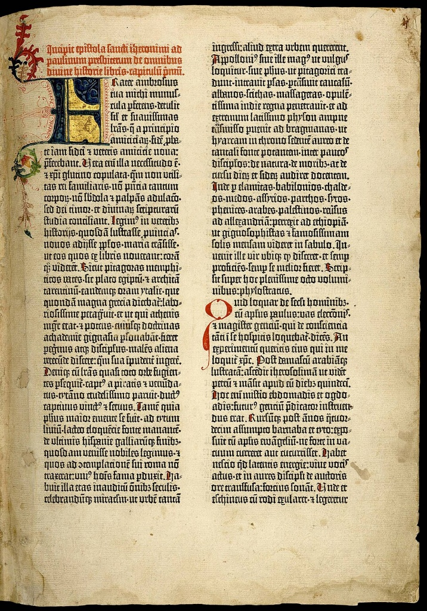

A imprensa é uma ferramenta poderosa na divulgação em grande escala das notícias, obras literárias, religião e pensamento. De acordo com a Enciclopédia Barsa já havia experiencias de textos impressos na Alemanha e nos Países Baixos pelo processo de xilogravura, assim como na China e na Coreia desde a Antiguidade. Era um processo manual e de pequenas tiragens. O grande do alemão Johannes Gutenberg é inovar com a tipografia, que consistia em tipos móveis feitos de metal, por meio de punções, matrizes e moldes, levando à produção de impressões em escala maior, melhor qualidade e homogeneidade no resultado. Nada obstante, há uma referência ao chinês Bi Sheng, que teria sido o primeiro a usar tipos móveis no ano de 1.040, o que faria dele, e não Gutenberg, a ser o primeiro a usar essa técnica.
Johannes Gensfleisch zur Laden (ou zum Gutenberg) nasceu em Mainz, Alemanha, cerca de 1400 e faleceu em 3 de fevereiro de 1468, na mesma cidade. Ele era de uma família abastada e o sobrenome pelo qual ficou famoso foi tomado de sua mãe. desde muito jovem demonstrou forte inclinação para a leitura de livros, lendo todos os que seus pais possuíam em casa. Estes livros eram escritos à mão por monges e aprendizes e demoravam meses para serem finalizados, tornando seus preços elevadíssimos, obviamente. Aos 34 anos Gutenberg foi morar em Estrasburgo e começou seu projeto de montar uma oficina de impressão em 1438, associando-se a Andreas Dritzehn, não seguindo adiante pelo falecimento precoce de seu sócio.
Em 1450 Gutenberg volta a Mainz e conhece Johann Fust, um rico proprietário impressor, que lhe empresta dinheiro para que monte uma pequena oficina impressora. Ele começa a produção de uma Bíblia em latim, com um layout muito sofisticado. A montagem das máquinas com tipos móveis concebe o texto em duas colunas com 42 linhas cada, totalizando 1.282 páginas e levou cinco anos para ser finalizada, a fim de começar a imprimir em definitivo. É crível que esta tenha sido a primeira obra a ser produzida com tipos móveis e, no mundo, ainda restam cerca de 46 exemplares, sendo um deles constante do acervo da Biblioteca Nacional, no Rio de Janeiro.

Ao concluir a Bíblia, Gutenberg não pagou a dívida com Johann Fust e foi processado judicialmente tendo perdido a causa e entregado como dação em pagamento os equipamentos de impressão ao seu antigo credor. Continuando em sua vocação, recebeu ajuda financeira de Konrad Humery, conselheiro municipal de Mainz, tendo imprimido a gramática latina de Hélio Donato, assim como um vocabulário e outros livros.
As impressões em larga escala não existiam e foi com o advento do engenho de Gutenberg que começaram a ser substituídas as formas rudimentares feitas à mão e as impressões em blocos de madeira. O modo de fazer livros foi aperfeiçoado e espalhou-se mundo afora. Além da técnica em si, os materiais também: a liga para os metais usados para a confecção dos tipos (chumbo, estanho e antimônio), a tinta à base de óleo e anova prensa adaptada de uma que se usava para a produção de vinho.
Não é sem razão que a invenção da máquina impressora, juntamente com a invenção da pólvora (também atribuída aos alemães) e da bússola, está vinculada ao progresso do conhecimento. Mas, como alerta Peter Burke, este advento trouxe consigo alguns efeitos colaterais não imaginados. A Bíblia de Gutenberg foi o marco inicial, porém com a popularização da impressão de livros, surgiram “narrativas catastróficas” como é natural sempre que uma inovação revoluciona a forma de viver e a zona de conforto do status quo das pessoas. Por exemplo, os copistas e os papeleiros que vendiam livros manuscritos, assim como os contadores de histórias viram seu meio de vida ameaçados. Os eclesiásticos por sua vez temiam que tal popularização desse acesso aos textos bíblicos e religiosos, o que faria com que pessoas comuns passassem a interpretar as Escrituras em vez que acatar a doutrinação dos exegetas. O Concílio de Trento (Itália, entre 1545 – 1563) elaborou uma lista de livros proibidos para evitar que leigos pudessem questionar os dogmas impostos pela Igreja. já os protestantes tomaram caminho oposto, estimulando a alfabetização da população pobre para que pudessem ler a Bíblia. Obviamente, muitos aprendiam a ler nas escolas de alfabetização e depois não ficavam apenas na leitura do texto sagrado. Outro aspecto da novel sociedade com a popularização dos livros, fruto da invenção da imprensa, foi o acesso a informações políticas divulgadas em panfletos e jornais produzidos em larga escala. Nas barbearias os homens começavam agora a debater as medidas do governo, arrazoando se estavam certas ou erradas e criticando-as muitas vezes, dando ocasião a críticas. Na mesma lógica da Igreja, o governo se via em dificuldades por não ter argumentos para rebater as medidas questionadas. Chegou-se a aventar a premissa de que “a invenção da tipografia trouxera mais malefícios do que vantagens para o mundo cristão”.
Se na Idade Média o problema era a falta de livros, com a invenção da imprensa, o problema passou ser a enorme quantidade deles. Tantos que se chegou a comparar com uma floresta em que leitor chegara a se perder ou a um oceano onde os leitores teriam que navegar. Mal comparando a explosão de livros e informações levou a um abalo na sociedade da época, comparável ao fenômeno das informações instantâneas das atuais redes sociais.
Outra novidade que foi se aperfeiçoando com a invenção de Gutenberg, em decorrência da produtividade de obras em escala industrial, foi a necessidade da proteção jurídica dos direitos autorais porque se precisaria de um regramento de quem teria o direito de reproduzir ou utilizar as obras escritas, vez que os autores precisariam ser remunerados.
Gutenberg figura como o grande precursor da imprensa moderna e os reflexos de sua invenção (ou aperfeiçoamento do que já fora desenvolvido antes dele) são sentidos no século seguinte, especialmente quando da Reforma Protestante, capitaneada por Martinho Lutero em 1517. Os panfletos luteranos passaram a ser rodados em máquinas que eram réplicas do modelo de Gutenberg, patrocinadas pelos simpáticos à Reforma e ampliaram consideravelmente a nova forma do Cristianismo perceber o exercício da fé.
Mesmo com a velocidade e facilidade dos atuais livros digitais e a consequente diminuição das livrarias físicas, os livros de papel ainda desfrutam de prestígio nos leitores e a invenção de Gutenberg se constitui uma verdadeira revolução na evolução do conhecimento humano.